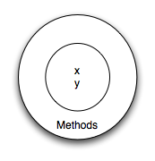
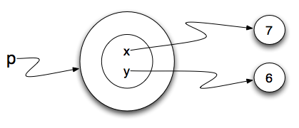

Python is an object-oriented programming language
. That means it provides features that support
object-oriented programming (OOP).
Object-oriented programming has its roots in the 1960s, but it
wasn’t until the mid 1980s that it became the main programming
paradigm used in the creation of new software. It was developed
as a way to handle the rapidly increasing size and complexity
of software systems and to make it easier to modify these large
and complex systems over time.
In procedural programming the focus is on writing functions or
procedures which operate on data. In object-oriented
programming the focus is on the creation of objects
which contain both data and functionality together.
Usually, each object definition corresponds to some object or
concept in the real world and the functions that operate on that
object correspond to the ways real-world objects interact.
Objects revisited
In Python, every value is actually an object. Whether it be a
dictionary, a list, or even an integer, they are all objects.
Programs manipulate those objects either by performing computation
with them or by asking them to perform methods. To be more specific,
we say that an object has a state and a collection of methods that it
can perform. (More about methods below.) The state of an object
represents those things that the object knows about itself. The state
is stored in instance variables. For example, as we have seen with turtle
objects, each turtle has a state consisting of the turtle’s position, its
color, its heading and so on. Each turtle also has the ability to go
forward, backward, or turn right or left. Individual turtles are different
in that even though they are all turtles, they differ in the specific values
of the individual state attributes (maybe they are in a different location
or have a different heading).
User Defined Classes
in many cases when we are solving problems we need to create data
objects that are related to the problem we are trying to solve. We
need to create our own classes.
As an example, consider the concept of a mathematical point. In two
dimensions, a point is two numbers (coordinates) that are treated
collectively as a single object. Points are often written in
parentheses with a comma separating the coordinates. For example,
(0,0) represents the origin, and (x, y)
represents the point x units to the right and y units up from the origin.
This (x,y)is the state of the point.
Thinking about our diagram above, we could draw a point object as
shown here.

Some of the typical operations that one associates with points might be to
ask the point for its x coordinate, getX, or to ask for its y
coordinate, getY. You would want these types of functions available to prevent
accidental changes to these instance variables since doing so would
allow you to view the values without accessing them directly. You may
also wish to calculate the distance of a point from the origin, or the
distance of a point from another point, or find the midpoint between two
points, or answer the question as to whether a point falls within a given
rectangle or circle. We’ll shortly see how we can organize these together
with the data.
Now that we understand what a point object might look like, we can define a new class.
We’ll want our points to each have an x and a y attribute, so our first class definition
looks like this.
class Point:
''' Point class for representing and manipulating x,y coordinates.'''
def __init__(self):
'''Create a new point at the origin'''
self.x = 0
self.y = 0
p = Point() # Instantiate an object of type Point
q = Point() # and make a second point
print("Nothing seems to have happened with the points")
Class definitions can appear anywhere in a program, but they
are usually near the
beginning (after the import statements). The
syntax rules for a class
definition are the same asfor other compound statements.
There is a header which
begins with the keyword, class, followed by
the name of the class,
and ending with a colon.
If the first line after the class header is a string, it
becomes the docstring of
the class, and will be recognized by various tools. (This
is also the way
docstrings work in functions.)
Every class should have a method with the special name __init__. This
initializer
method, often referred to as the constructor,
is automatically called whenever a
new instance of Point is created. It gives the
programmer the opportunity to
set up the attributes required within the new instance by
giving them their
initial state values. The self parameter (you could
choose any other name, but
nobody ever does!) is automatically set to reference the newly
created object
that needs to be initialized.
During the initialization of the objects, we created two
attributes called x and y for
each object, and gave them both the value 0. You will note that
when you run the
program, nothing happens. It turns out that this is not quite
the case. In fact,
two Points have been created, each having an x
and y coordinate with value 0.
However, because we have not asked the program to do anything
with the points,
we don’t see any other result.
The following program adds a few print statements. You can see
that the output suggests
that each one is a Point object. However, notice that
the is
operator returns False
meaning that they are different objects (we will have more to say
about this in a later
section).
class Point:
''' Point class for representing and manipulating x,y coordinates.'''
def __init__(self):
'''Create a new point at the origin'''
self.x = 0
self.y = 0
p = Point() # Instantiate an object of type Point
q = Point() # and make a second point
print("Nothing seems to have happened with the points")
print(p)
print(q)
print(p is q)
A function like Point that creates a new object instance
is called a constructor. Every class
automatically uses the name of the class as the name of the
constructor function. The definition
of the constructor function is done when you write the __init__
function (method) inside the
class definition.
It may be helpful to think of a class as a factory for making
objects. The class itself
isn’t an instance of a point, but it contains the machinery to
make point instances. Every
time you call the constructor, you’re asking the factory to make
you a new object. As the
object comes off the production line, its initialization method
is executed to get the object
properly set up with it’s factory default settings.
The combined process of “make me a new object” and “get its
settings initialized to the factory
default settings” is called instantiation.
Adding parameters to the constructor
Our constructor so far can only create points at location
(0,0). To create a point at
position (7, 6) requires that we provide some additional capability
for the user to pass information
to the constructor. Since constructors are simply specially named
functions, we can use parameters
(as we’ve seen before) to provide the specific information.
We can make our class constructor more generally usable by
putting extra parameters into the
__init__ method, as shown in this example.
class Point:
''' Point class for representing and manipulating x,y coordinates.'''
def __init__(self):
self.x = initX
self.y = initY
p = Point(7, 6)
Now when we create new points, we supply the x and y coordinates
as parameters. When the point is created,
the values of initX and initY are assigned to the state of the
object, in the instance variables
x and y.
This is a common thing to do in the __init__ method for a class:
take in some parameters and save them as
instance variables. Why is this useful? Keep in mind that the
parameter variables will go away when the
method is finished executing. The instance variables, however,
will still be accessible anywhere that you
have a handle on the object instance. This is a way of saving
those initial values that are provided when
the class constructor is invoked.

Adding other methods to a class
The key advantage of using a class like Point rather than
something like a simple tuple
(7, 6) now becomes apparent. We can add methods to the
Point class that are
sensible operations for points. Had we chosen to
use a tuple to represent the point, we would not have this capability.
Creating a class like
Point brings an exceptional amount of “organizational
power” to our programs, and to our
thinking. We can group together the sensible operations, and the
kinds of data they apply to, and each
instance of the class can have its own state.
A method behaves like a function but it is invoked on a
specific instance. For example, with a list
bound to variable L, L.append(7) calls the function append,
with the list itself as the first
parameter and 7 as the second parameter. Methods are accessed using dot
notation. This is why L.append(7)
has 2 parameters even though you may think it only has one: the list
stored in the variable L is the
first parameter value and 7 is the second.
Let’s add two simple methods to allow a point to give us information about
its state. The getX method,
when invoked, will return the value of the x coordinate.
The implementation of this method is straight forward since we already know
how to write functions that
return values. One thing to notice is that even though the getX
method does not need any other parameter
information to do its work, there is still one formal parameter,
self. As we stated earlier, all methods
defined in a class that operate on objects of that class will have
self as their first parameter. Again,
this serves as a reference to the object itself which in turn gives access
to the state data inside the
object.
class Point:
''' Point class for representing and manipulating x,y coordinates.'''
def __init__(self):
self.x = initX
self.y = initY
defX(self):
return self.x
defY(self):
return self.y
p = Point(7,6)
print(p.getX())
print(q.getX())
Note that the getX method simply returns the value of the
instance variable x from the object self. In other
words, the implementation of the method is to go to the state of the
object itself and get the value of x.
Likewise, the getY method looks almost the same.
Let’s add another method, distanceFromOrigin, to see better
how methods work. This method will again not need any
additional information to do its work, beyond the data stored in the
instance variables. It will perform a more
complex task.
class Point:
''' Point class for representing and manipulating x,y coordinates.'''
def __init__(self):
self.x = initX
self.y = initY
defX(self):
return self.x
defY(self):
return self.y
def distanceFromOrigin(self):
return ((self.x ** 2) + (self.y ** 2)) ** 0.5
p = Point(7,6)
print(p.distanceFromOrigin())
Notice that the call of distanceFromOrigin does not explicitly
supply an argument to match the self parameter. This is true of
all method calls. The definition will always seem to have one additional
parameter as compared to the invocation.
Objects as arguments and parameters
You can pass an object as an argument to a function, in the usual way.
Here is a simple function called distance involving our new
Point objects. The job of this function is to figure out the
distance between two points.
class Point:
''' Point class for representing and manipulating x,y coordinates.'''
def __init__(self):
self.x = initX
self.y = initY
defX(self):
return self.x
defY(self):
return self.y
def distanceFromOrigin(self):
return ((self.x ** 2) + (self.y ** 2)) ** 0.5
def distance(point1, point2):
xdiff = point2.getX()-point1.getX()
ydiff = point2.getY()-point1.getY()
dist = math.sqrt(xdiff**2 + ydiff**2)
return dist
p = Point(4,3)
q = Point(0,0)
print(distance(p,q))
distance takes two points and returns the distance between them. Note that
distance is not a method of the Point class. You can see
this by looking at the indentation pattern. It is not inside the class definition. The
other way we can know that distance is not a method of Point is that
self is not included as a formal parameter. In addition, we do not invoke
distance using the dot notation.
We could have made distance be a method of the Point class. Then, we would have
called the first parameter self, and would have invoked it using the dot notation, as in
the following code. Which way to implement it is a matter of coding style. Both work
correctly. Most programmers choose whether to make functions be stand-alone or methods
of a class based on whether the function semantically seems to be an operation that is
performed on instances of the class. In this case, because distance is really a property
of a pair of points and is symmetric (the distance from a to b is the same as that from b
to a) it makes more sense to have it be a standalone function and not a method. Many heated
discussions have occurred between programmers about such style decisions.
class Point:
''' Point class for representing and manipulating x,y coordinates.'''
def __init__(self):
self.x = initX
self.y = initY
defX(self):
return self.x
defY(self):
return self.y
def distanceFromOrigin(self):
return ((self.x ** 2) + (self.y ** 2)) ** 0.5
def distance(point1, point2):
xdiff = point2.getX()-point1.getX()
ydiff = point2.getY()-point1.getY()
dist = math.sqrt(xdiff**2 + ydiff**2)
return dist
p = Point(4,3)
q = Point(0,0)
print(distance(p,q))
Reference
All the documentation in this page is taken from
fopp